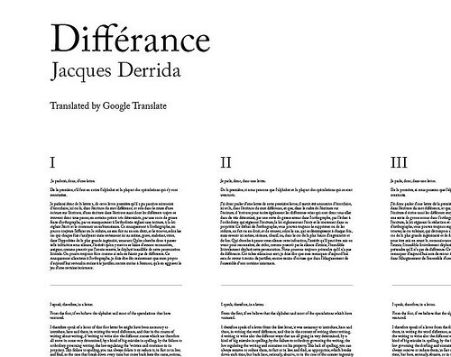

3Ds



My Site
11/2/10
Derrida, 1697-1713 (de Man, 1365-1378 suggested)
Topics:
Derrida, Differance, Deconstruction
Pharmakon,
absence/presence,
Metaphysics of presence,
ruin, ashes, polysemy,
relativism, decision, judgement
3Ds
11/2/10
"the father of logos"
supplement
“This process of substitution, which thus functions as a pure play of traces or supplements or, again, operates within the order of the pure signifier which no reality, no absolutely external reference, no transcendental signified, can come to limit, bound, or control; this substitution, which could be judged "mad" since it can go on infinitely in the element of the linguistic permutation of substitutes, of substitutes for substitutes; this unleashed chain is nevertheless not lacking in violence. “
“Logos, a living, animate creature, is thus also an organism that has been engendered. An organism: a differentiated body proper, with a center and extremities, joints, a head, and feet. In order to be "proper," a written discourse ought to submit to the laws of life just as a living discourse does.”
“To a considerable degree, we have already said all we meant to say. Our lexicon at any rate is not far from being exhausted. With the exception of this or that supplement, our questions will have nothing more to name but the texture of the text, reading and writing, mastery and play, the paradoxes of supplementarity, and the graphic relations between the living and the dead: within the textual, the textile, and the histological. We will keep within the limits of this tissue: between the metaphor of the histos (2) and the question of the histos of metaphor.”